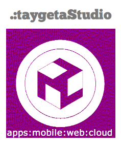

Sobre jimenezsterLabs
Soy un emprendedor con sede en España y me dedico dar respuestas a lo siguiente:
- Los problemas más importantes y difíciles a veces tienen una solución sencilla difícil de ver
- Las empresas de Tecnologías de la Información se embarcan en soluciones complejas y caras
- Las metodologías utilizadas, y si realmente se utilizan, a menudo suelen ser costosas de utilizar y poco prácticas
Desde jimenezsterLabs, se dan las soluciones que más se ajustan a los presupuestos de las empresas, utilizando metodologías ágiles y fáciles de entender por los clientes. Integrándose de manera sencilla y eficaz en el desarrollo de los proyectos. Dando a nuestro cliente un papel participativo en su producto desde un primer momento.
La pasión por la tecnología y por el desarrollo de apps con un fundamento único de funcionalidad y rendimiento con diseño agnóstico, ascético y minimalista, ofrecen a las empresas el placer de diversión en la utilización de sus apps mientras aumentan su productividad
